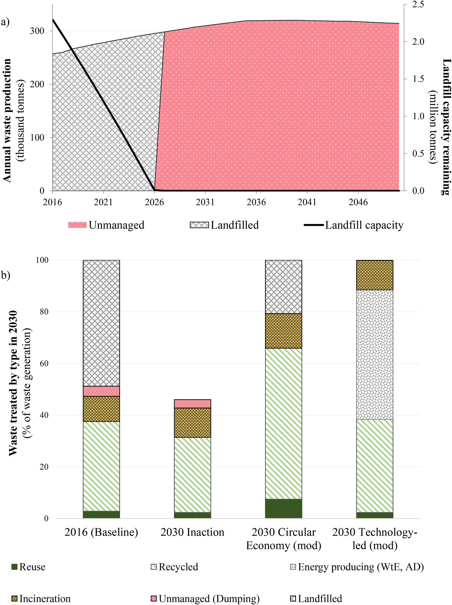
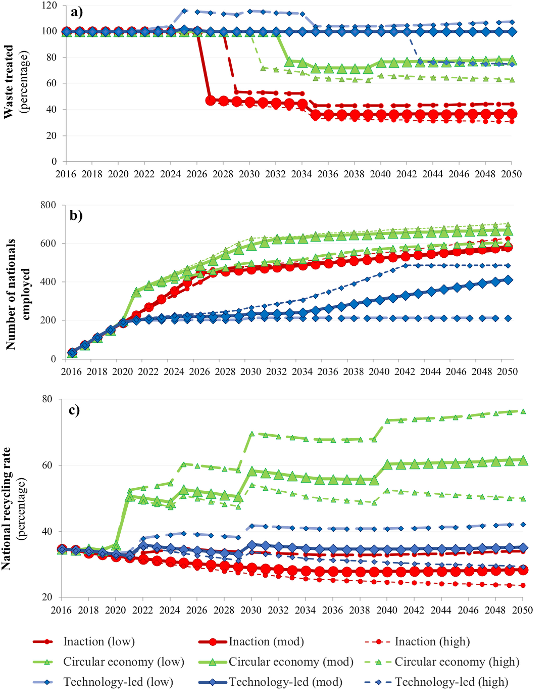
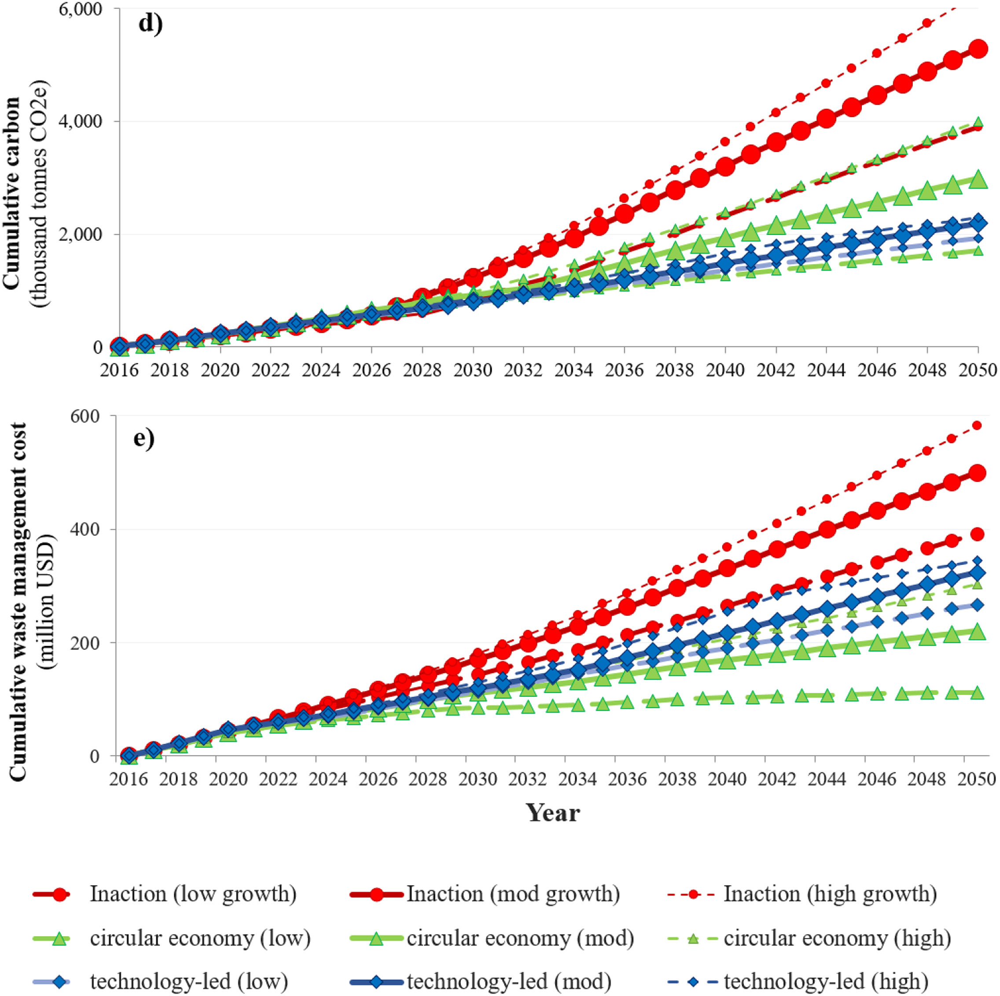
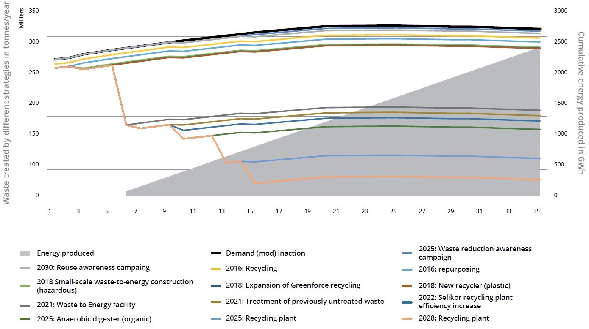
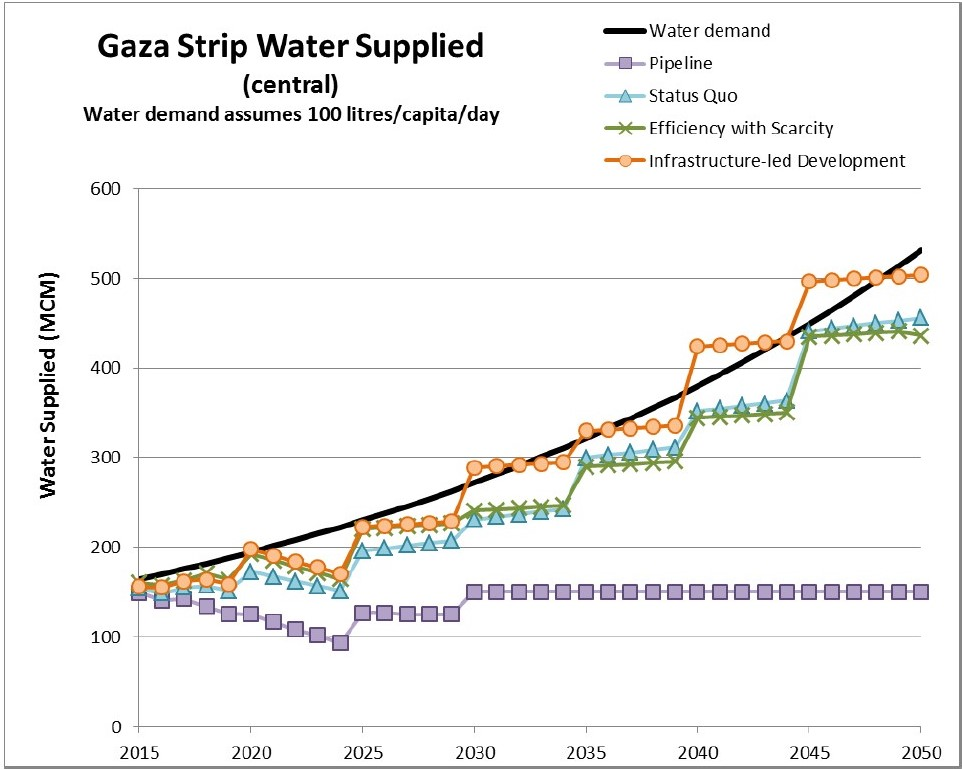
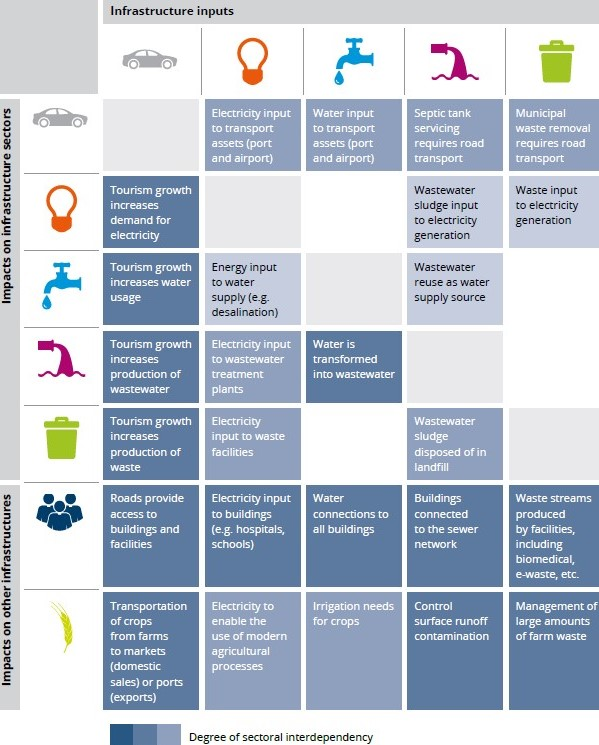
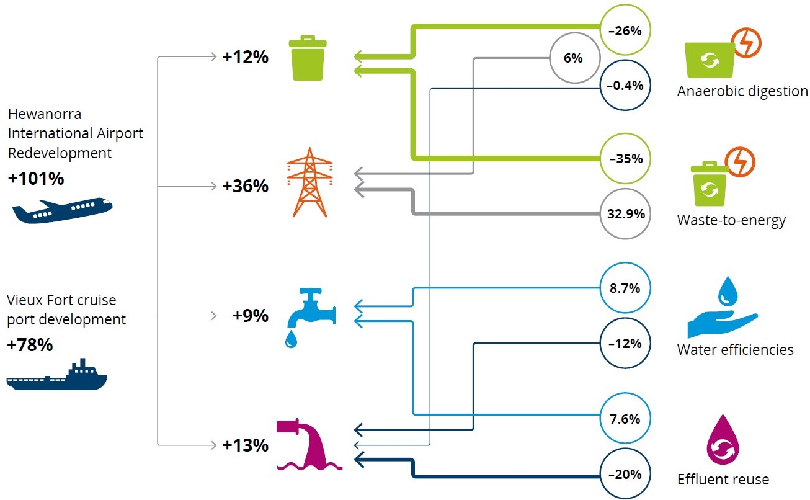

This mini-lecture we use the case studies of Curaçao, Saint Lucia and Palestine to provide examples of performance evaluation of strategies and decision-making processes for infrastructure planning.
This mini-lecture will showcase different applications of the National Infrastructure Systems MODel – International (NISMOD-Int) for strategy evaluation in infrastructure planning. Strategy evaluation and decision-making were used in a range of international contexts including Curaçao, Saint Lucia and Palestine and will be described in detail here. Furthermore, the evaluations include waste and water sectors and a cross-sectoral analysis that provides an overview of infrastructure interdependencies in the long-term.
Alongside the descriptions of these cases, the different potential strategies and the different indicators used in each country will also provide insight on the participatory nature of this process and how different contexts, needs and priorities shape the infrastructure planning process.
The waste management system in Curaçao heavily depends on landfills, which will run out of capacity in the next five years. Figure 7.4.1a shows that landfill capacity will be depleted by 2026 and without other interventions, the waste generated thereafter might remain unmanaged. As seen in mini-lecture 6.4, different waste strategies were proposed for Curaçao, including “Baseline,” “Inaction,” “Circular Economy” and “Technology-led.”
Figure 7.4.1b ilustrates the waste options of each strategy by 2030. Half of the “baseline” strategy still depends on landfills, while the “circular economy” strategy proposes 60% of recycling, and the “technology-led” strategy includes a new option of producing energy from waste and anaerobic digestion consuming about 50% of waste generation without needing any landfills.

Figure 7.4.1: Waste treatment by strategy (Fuldauer et al. 2019)
In Figure 7.4.2, the aforementioned strategies were assessed based on their performance against three important Sustainable Development Goal (SDG) indicators: waste treated, number of nationals employed and national recycling rate. The evaluation was made by integrating the low, moderate and high projections to evaluate the effect of the uncertainty on the decision-making process. The technology-led strategy is the only one able to treat 100% of the waste until 2050. However, the circular economy approach shows a better performance on employment and recycling.

Figure 7.4.2: Performance of waste strategies on SDG indicators (Fuldauer et al. 2019)
The three main strategies for Curaçao were also evaluated against cost and carbon emissions, as shown in Figure 7.4.3. While there is an overlap in the range of projections, the technology-led strategy performs better in carbon emissions, and the circular economy strategy is more cost-effective. Inaction performs worst for both indicators.

Figure 7.4.3: Performance of waste strategies against cost and cumulative carbon (Fuldauer et al. 2019)
The performance analysis developed for Curaçao shows that under a moderate growth scenario, the circular economy strategy outperforms the other ones. However, under the high waste generation scenario, the technology-led strategy appears to be a better choice because circular economy is equally costly but emits more CO2.
The selection of a predetermined strategy is not mandatory. Normally, the national infrastructure strategy is developed in a participatory process by blending interventions from different strategies. Figure 7.4.4 shows the waste management pathway selected for Curaçao, which ultimately combined different interventions to meet waste generation and produce energy as an outcome of the system.

Figure 7.4.4: Waste management pathway (Adshead et al. 2018)
As shown in mini-lecture 6.4, five infrastructure strategies were developed for the Fast Track Infrastructure Analysis for Palestine, depending on their degree of investment levels and provision of infrastructure. The lower level of investment and provision was called the “No build” strategy, which was used as a benchmark. An intermediate level of investment and provision was called the “Status Quo,” and the highest level of investment and provision was called “Infrastructure-led development.” Intermediate strategies were called “Pipeline” and “Efficiency with Scarcity” (see mini-lecture 6.4). Figure 7.4.5 shows an analysis on how the different strategies perform under the central (or most likely) scenario of water demand. It is noticeable that the only alternative that meets future demand is the “Infrastructure-led development” with the “Status Quo” and “Efficiency with Scarcity” strategies falling short.

Figure 7.4.5: Strategic Performance for Water Supply in Gaza (Ives et al. 2018)
This analysis was developed by using an expected 100 litres/capita/day consumption based on WHO recommendations. While this can be achieved for the “central” projection, a more pessimistic projection called “unstable adversity” was only able to achieve 30 litres/capita/day.
For Saint Lucia, the National Infrastructure Assessment evaluated the electricity, water, wastewater and solid waste sectors. As shown in Figure 7.4.6, cross-sectoral interdependencies were analysed in a qualitative manner. Strong interdependencies were found between transport as an important driver of tourism demand (by expanding ports and airports) and all other sectors. Other strong interdependencies were found between water and wastewater, irrigation with solid waste and wastewater (treated wastewater can be used for irrigation). Other interdependencies were considered moderate or weak but still important to evaluate for national planning purposes.

Figure 7.4.6: Cross-sectoral infrastructure interdependencies in Saint Lucia (Adshead et al. 2020)
Figure 7.4.7 illustrates quantitative relations between sectors. The expansion of ports and airports might increase the demand for electricity, water, wastewater and solid waste by between 9% and 36% by 2050. While anaerobic digestion and waste-to-energy projects are capable of diverting between 26% and 35% of the waste stream, they can also produce between 6% and 33% of electricity demand by 2050. Interdependencies between water and wastewater were also quantified including water efficiencies (reducing losses and consumption) and effluent reuse. Both options can generate a reduction of between 7.6% and 20% in demand for both sectors.

Figure 7.4.7: Quantification of cross-sectoral infrastructure interdependencies for Saint Lucia by 2050 (Adshead et al. 2020)
In this mini-lecture we illustrate previous concepts with practical applications of strategic evaluation on real cases. We explored waste management, water systems and infrastructure interdependencies in Curacao, Palestine and Saint Lucia, respectively. In this way we review the differences between contexts, assumptions and sectors.